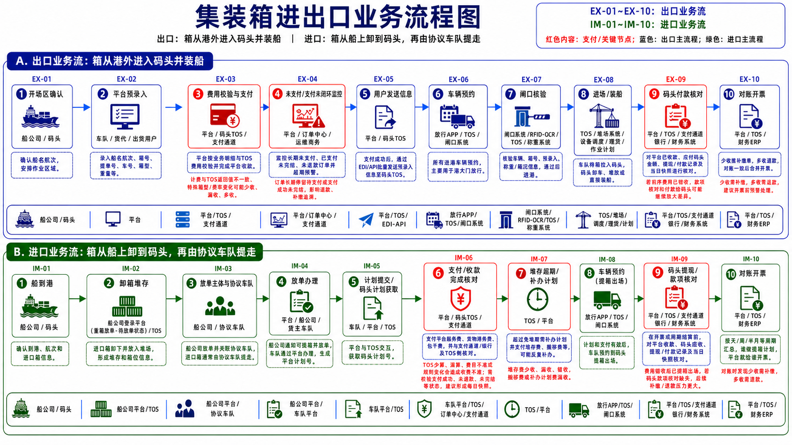
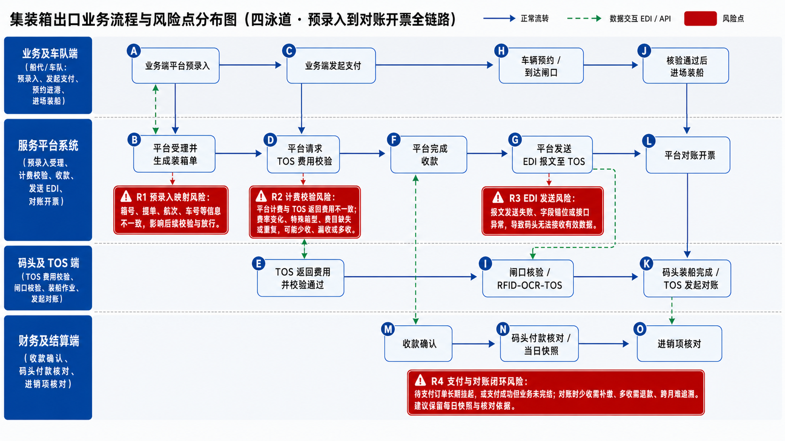
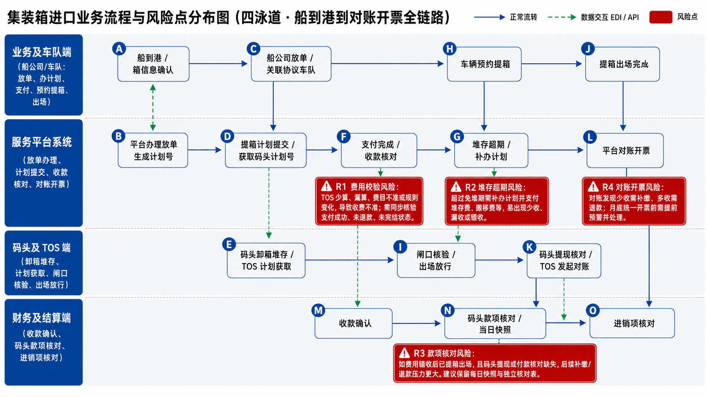
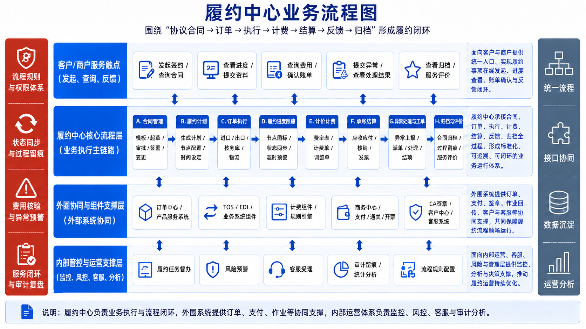
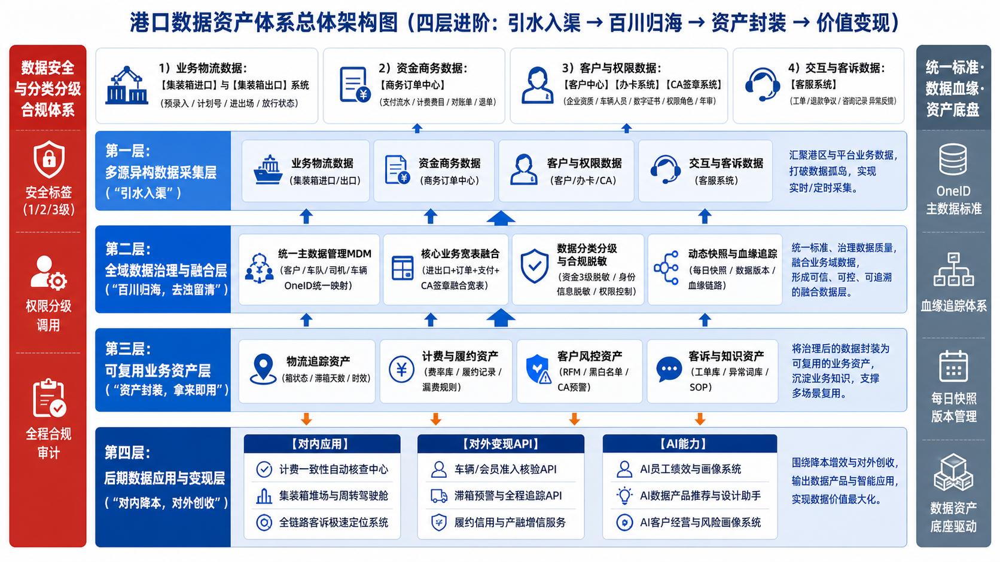

以履约中心为业务执行引擎，以数据资产池为企业级数据底座，
构建数据智能驱动、业务全域协同的平台化运营体系
从分散支撑走向一体化运营管控
随着港口物流业务持续复杂化，合同、订单、履约、计费、支付、客服反馈等数据仍分散在不同系统中，状态链不完整、口径不统一、跨系统追溯困难，现有人工核对和事后补救方式已难以支撑精细化运营。
本方案以履约中心承接业务执行闭环，以数据资产池夯实企业级数据底座，先打通关键链路、统一标准口径和质量规则，再逐步支撑运营管理、业财融合、风险预警和后续数据产品运营。
拉通合同、订单、箱号、费用、支付、结算和履约节点，让每一票业务可穿透查询，支撑运营监控与经营分析。
基于状态一致性、金额一致性、履约超时、规则冲突等校验机制，将异常识别从事后追查前移到过程预警。
通过工单闭环打通商务、业务、客服、财务和管理端，让异常发现、派单、处理、复核、归档形成统一流程。
按大数据项目标准动作建设数据标准、主数据、质量规则、每日快照、血缘追溯和安全权限，避免只做上层展示。
流程现状梳理 · 关键风险识别 · 后续建设对齐



履约中心负责业务运行 · 数据资产池负责持续沉淀与治理
履约中心定位为业务应用和流程闭环系统，负责履约业务域的在线化管理与过程控制，不单独承担企业级数据中台职责。其运行过程中沉淀的合同、计费、履约、工单和操作日志，将反哺数据资产池，成为后续经营分析、业财融合和风险预警的重要数据来源。
统一管理合同模板、签章状态、变更记录、附件归档和关键日期提醒，打通合同与订单、费用、履约的关联。
承接费率配置、计算单、调整单、应收应付、补缴退款和发票校验，减少漏收、错收和人工复核。
按合同号、订单号、箱号、计划号跟踪关键节点，形成履约时间轴、SLA预警和业务过程留痕。
异常识别后自动派单，跟踪处理、升级、复核、结项和复盘标签，确保每个问题可定位、可追责、可归档。
提供合同查询、履约进度、费用明细和发票查询，减少人工查询和业务进度沟通成本。
支持商户查看合作协议、上报节点进度、补充材料、反馈处理结果，并接收超时、材料缺失和费用提醒。
面向业务、商务、客服、财务和管理人员提供任务处理、异常处置、规则校验、履约看板和审计留痕。
围绕协议合同、订单执行、计价计费、履约跟踪和工单归档形成闭环

围绕合同、订单、履约、计费、工单形成业务运行闭环，点击展开查看详情
四层递进 · 引水入渠 → 百川归海 → 资产封装 → 降本创收

多源异构数据实时 + 批量采集
汇聚分散数据，打通数据孤岛
统一主数据 MDM · 宽表融合
分类分级 · 血缘 · 快照
物流追踪 · 计费履约 · 客户风控
客诉知识资产 · 标准化资产
反哺管理 · API 输出 · 产品化
AI 与大模型赋能
不是“随便抽取、简单整合”，而是标准先行、分层加工、质量闸门、全程留痕的受控数据生产体系
港口数据来自合同、订单、箱货、计费、支付、履约、工单等多个系统。治理的关键不是把表“搬到一起”，而是建立统一业务语义、稳定关联主键、可审计加工链路和可量化质量规则，确保每一项指标都能追溯到来源、口径和责任人。
按业务域盘点系统、表、接口、指标和敏感数据，明确治理优先级及责任边界。
统一订单、客户、箱号、费用、支付、履约节点等核心对象的名称、编码和统计口径。
通过数据源与同步任务接入全量 / 增量数据，原样落入 ODS 层并保留采集批次。
处理空值、重复、错误码、异常格式和单位差异，并保留问题数据及修正规则。
以统一客户、订单、合同、箱号等主键建立跨系统关联，解决一物多码和主体不一致。
按 ODS → DIM / DWD → DWS → ADS 分层加工，明细、汇总和应用口径相互隔离。
规则随调度触发；强规则失败时阻断下游，敏感字段按分类分级授权和脱敏。
通过目录、报表或 API 发布，监控时效、成本和使用情况，并用问题闭环持续优化规则。
以六类规则守住数据入口，并将“谁定义、谁实现、谁审批、谁处置”落到责任人。
统一开发治理、数仓存算、数据开放与分析展示协同建设，形成完整的数据生产和应用闭环
DataWorks 不是数据资产池的全部，而是贯穿全链路的开发治理与运维控制平台：统一管理数据源、开发任务、质量规则、调度依赖、生产运维、资产目录、安全权限和数据服务。
MaxCompute 承担数据仓库存储与批量计算，数据服务负责标准 API 开放，Quick BI 面向经营分析，DataV 面向运营驾驶舱和可视化大屏。
隔离开发生产，绑定算力，最小权限授权
连接源端与 MaxCompute，配置全量 / 增量同步
按分层模型沉淀数据并执行海量 SQL 加工
拖拽节点、编写 SQL、设置依赖和调度参数
规则随节点触发，失败告警或阻断下游
监控 DAG、基线、实例、日志并补数重跑
发布 API，形成经营报表、分析看板与运营大屏
支持关系型数据库、文件、消息队列等异构数据源的离线、实时及全增量同步；同步前先配置数据源、资源组和网络连通。
${bizdate}、并发数和脏数据策略 → 测试后纳入调度。负责数据表、分区、SQL 计算和存储生命周期。它不是操作编排界面，而是被 DataWorks 调用的数仓计算引擎。
在画布中创建数据集成、MaxCompute SQL、虚拟节点等任务，配置上下游 DAG、调度参数、运行资源并进行测试、提交和发布。
${bizdate} 接收业务日期；以“接入 → 清洗 → 维表 / 明细 → 汇总 → 应用”连线，标准模式下经开发、评审后发布生产。质量规则随调度节点执行，并通过 DAG、实例、基线和日志监控任务运行，支持告警、诊断、补数和重跑。
数据地图沉淀元数据、字段、血缘、质量和安全等级；数据服务将授权后的结果表以零代码或 SQL 方式发布为标准 API。
Quick BI 面向数据集、自助分析、电子表格和仪表板；DataV 侧重低代码可视化大屏、二维 / 三维时空展示及跨页面交互编排。
订单全链路核验 × 异常订单分析 · 先核验、后分析的递进关系
| 核验维度 | 异常场景 | 风险等级 |
|---|---|---|
| 支付已完成 × 履约未完成 | 客户已付款但服务未交付，存在客诉与资金风险 | 🔴 高 |
| 未支付 × 订单已完成 | 服务已交付但费用未收取，存在漏收费风险 | 🔴 高 |
| 支付状态 × 订单状态 | 支付完成但订单状态未同步更新，系统状态不一致 | 🟡 中 |
| 履约节点 × 订单状态 | 履约已推进但订单状态停滞，业务流转卡顿 | 🟡 中 |
| 异常类型 | 典型表现 | 处理方式 |
|---|---|---|
| 业务信息缺失 | 订单缺少合同号、箱号为空、客户主体未填写 | 自动触发数据补录工单 |
| 状态链路不一致 | 订单状态"已完成"但履约记录仅到"装货" | 自动预警并推送至业务负责人 |
| 时间顺序异常 | 支付时间早于订单创建时间 | 标记为疑似数据异常，人工复核 |
| 业务关联断裂 | 订单存在但无对应合同 | 自动标记为"孤立数据" |
围绕履约中心与数据资产池一体化建设，形成运营、决策、服务、考核的整体目标
打好底座、分步扩展
多维度价值体现，推动港融数字化转型
承接数字经济、数据要素、智慧港口、国企数字化转型方向
统一核心口径，提升订单、费用、支付等关键环节透明度
API、订阅服务、预警服务、专题报告，探索长期增值收入
透明获取订单进度、箱货状态，减少人工查询和对账争议
智能问数、作业预测、异常检测、客户画像的高质量数据基础
分类分级、授权、脱敏、出域审批，降低数据泄露风险
打通港口、货主、货代、船公司、车队、金融机构的数据协同
可盘点、可治理、可复用、可评估、可运营的数据资产
港口数据资产化、本地化数据服务的行业样板